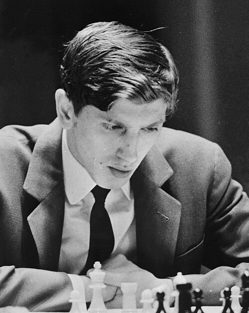
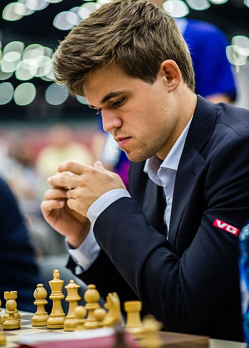
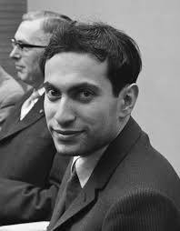
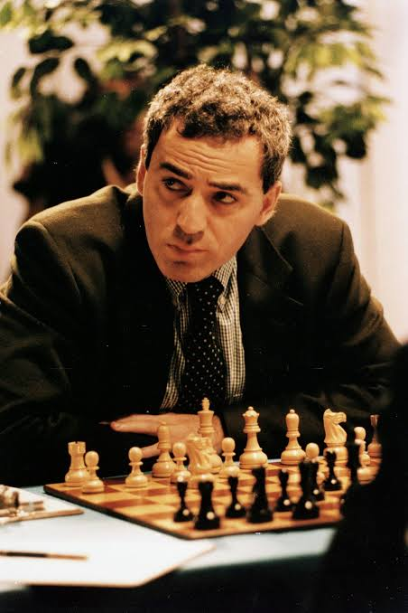

Best Players
A few Legends that shaped the world of Chess forever:

Bobby Fischer (1943 - 2008)
Bobby Fischer was an American chess prodigy and the 11th World Chess Champion, widely regarded as one of the greatest chess players in history.

Magnus Carlsen (1990 - present)
A Norwegian grandmaster born in 1990, he has redefined the sport through his unmatched peak ratings, versatility across all time controls, and relentless endgame technique.

Mikhail Tal (1936 - 1992)
A Norwegian grandmaster born in 1990, he has redefined the sport through his unmatched peak ratings, versatility across all time controls, and relentless endgame technique.

Garry Kasparov (1963 - present)
Garry Kasparov is widely considered one of the greatest chess players in history due to his record-breaking dominance, aggressive playing style, and long reign as World Chess Champion.